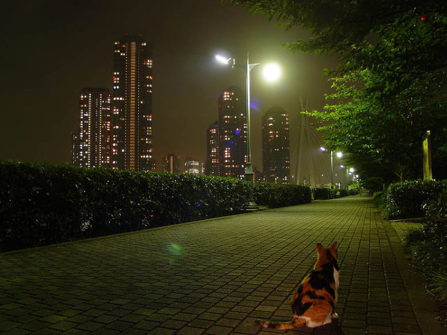

Mike hace su camino hacia la ciudad, alejándose de sus preocupaciones del bosque.
Al llegar a la ciudad, se siente más seguro, pero no es fácil navegar por la ciudad como un gato callejero.
Caminando por las calles, Mike encuentra un área más tranquila, con algunas opciones a las que se puede dirigir.
A la izquierda, Mike ve un edificio de apartamentos. Hay varias luces encendidas y personas con mascotas en los alrededores.
A la derecha, se ve un gran parque con otros animales callejeros que disfrutan del espacio para refugiarse.
Es tu turno de decidir qué ruta tomar de aquí.